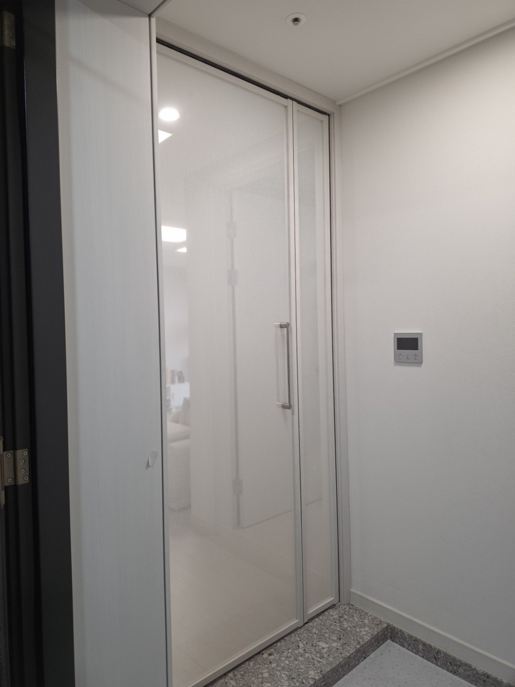
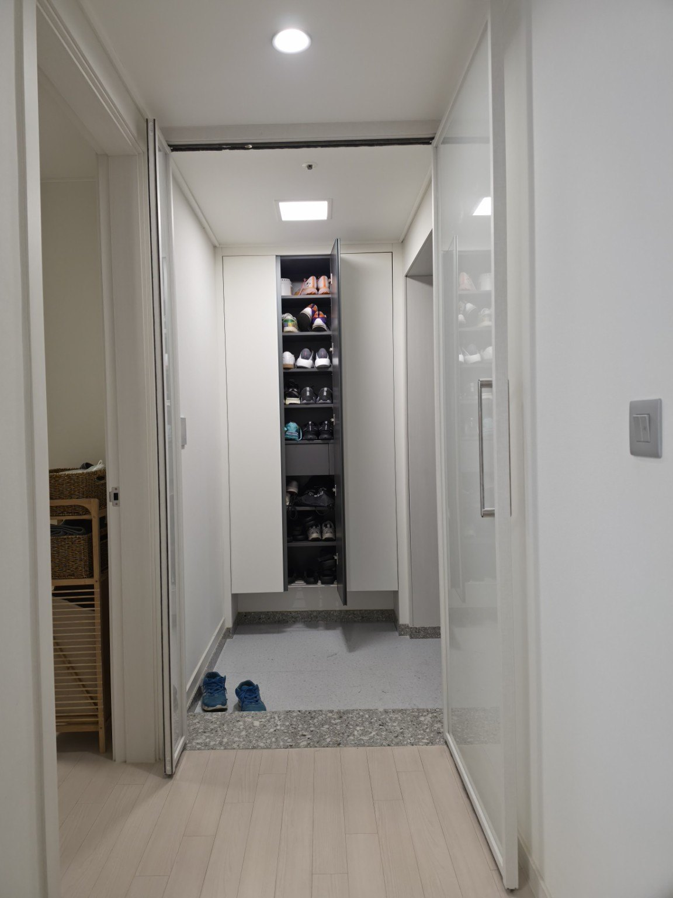
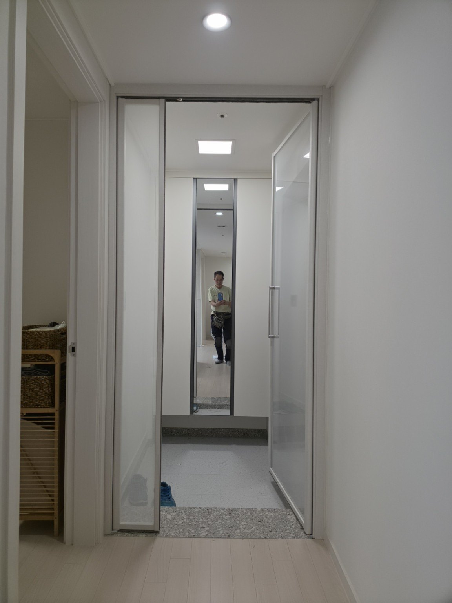
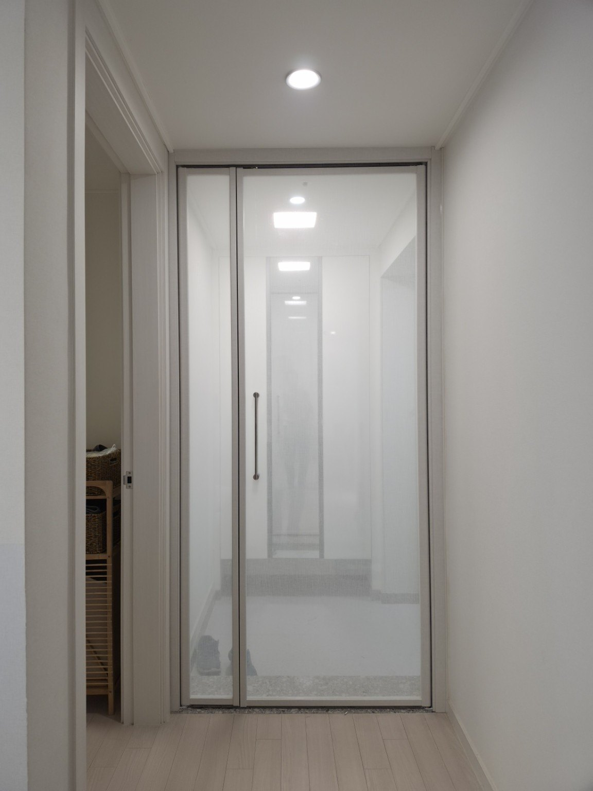

홈 › 현관중문 시공사례
부평 캐슬앤더샵퍼스트 109동 32평
양방향 여닫이 현관중문 시공
시공 현장 부평 캐슬앤더샵퍼스트 109동 32평
중문 방식 양방향 여닫이
유리 패브릭 접합유리
프레임 화이트
중문 방식 양방향 여닫이
유리 패브릭 접합유리
프레임 화이트
패브릭 접합유리를 적용한 이유
이번 현장은 화이트 프레임의 양방향 여닫이 중문에 패브릭 접합유리를 적용했습니다. 패브릭 특유의 부드러운 질감이 유리 사이에서 은은하게 보여 현관과 실내를 자연스럽게 구분하면서도 밝고 깔끔한 분위기를 유지할 수 있습니다.
접합유리는 두 장 이상의 유리 사이에 중간막을 넣어 결합하는 구조로, 파손되더라도 유리 조각이 중간막에 붙어 비산을 줄이는 데 도움이 되는 안전유리입니다. 현관처럼 가족이 자주 드나드는 공간에서 안전성을 고려할 때 장점이 있습니다. 패브릭을 접합한 제품은 이러한 접합 구조에 장식성과 시선 차단 효과를 더할 수 있습니다.
시공 사진





묻고 답하기
Q. 양방향 여닫이 중문은 어떤 점이 편리한가요?
A. 현관 안쪽과 바깥쪽 양쪽 방향으로 문을 열 수 있어 출입 동선에 맞춰 편리하게 사용할 수 있습니다.
Q. 패브릭 접합유리는 일반 유리와 무엇이 다른가요?
A. 유리 사이에 패브릭과 중간막을 접합해 패브릭의 질감과 디자인을 살린 유리입니다. 접합 구조라 파손 시 유리 조각의 비산을 줄이는 데 도움이 됩니다.
Q. 패브릭 유리를 사용하면 현관이 어두워지나요?
A. 패브릭의 종류와 밀도에 따라 차이가 있지만, 빛은 부드럽게 통과시키면서 시선을 적당히 가려주는 효과를 기대할 수 있습니다.
Q. 우리 집 현관에도 같은 방식으로 시공할 수 있나요?
A. 현관 폭, 벽체와 신발장 위치, 문이 열리는 동선을 확인한 뒤 현장 구조에 맞게 제작·시공합니다. 사진과 대략적인 치수를 보내주시면 상담에 도움이 됩니다.